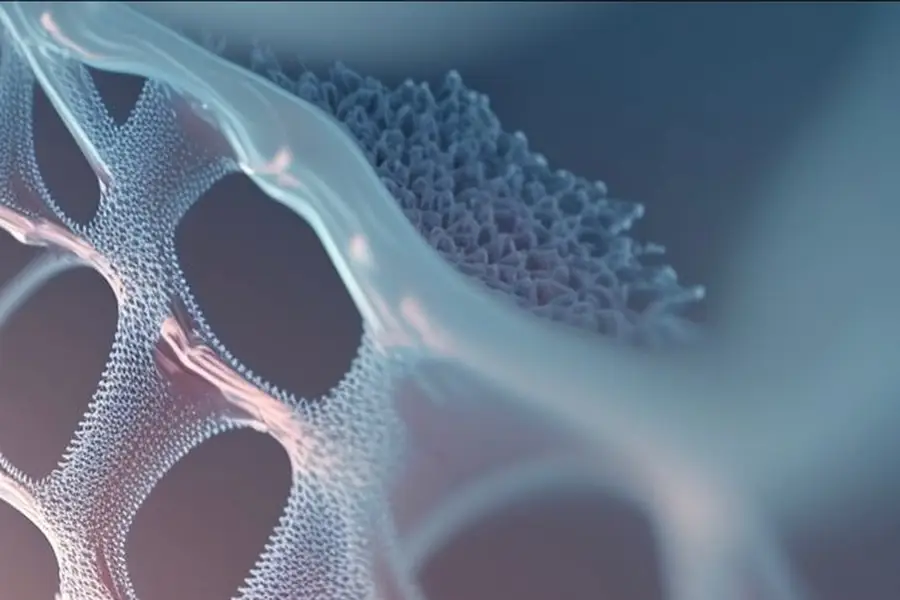
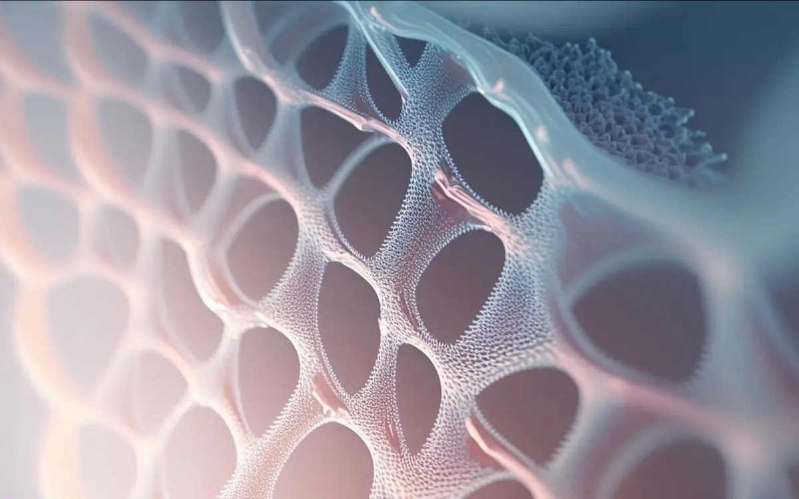
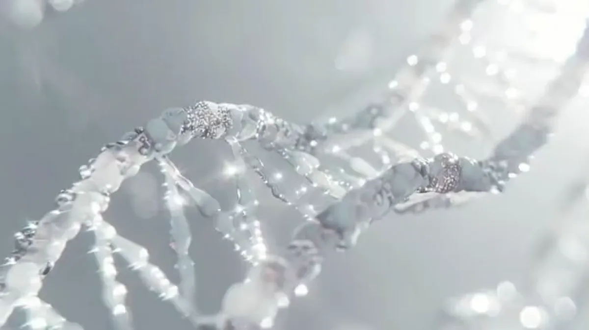
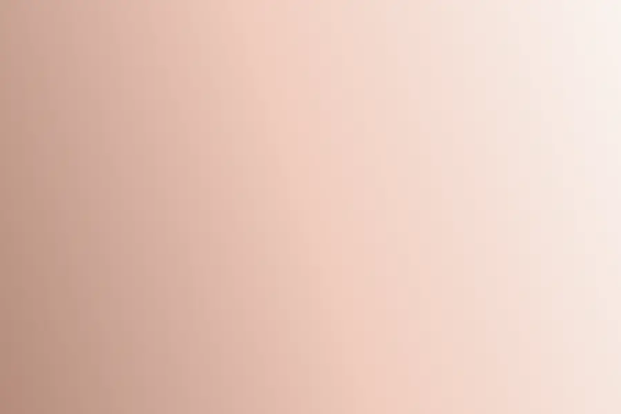
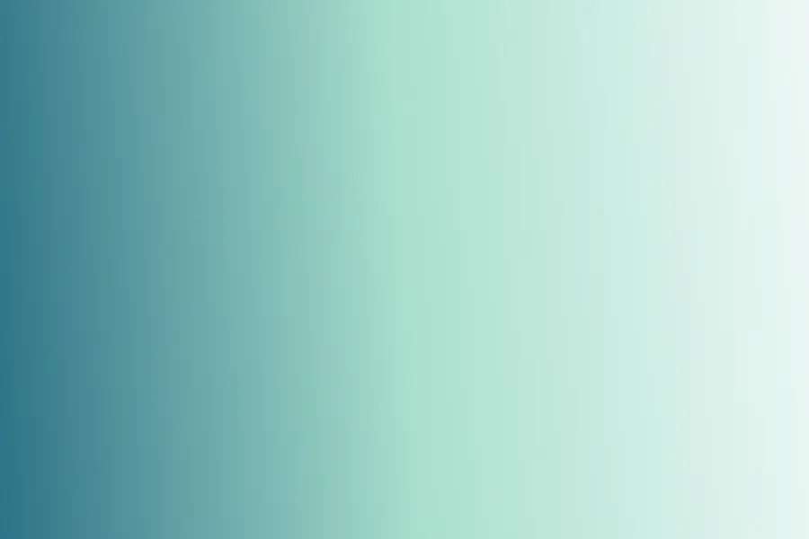
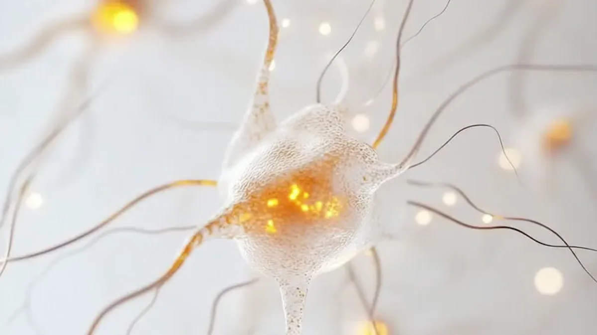

Estrutura
Estrutura internacional
Estrutura societária nos Estados Unidos, relacionamento e qualificação conduzidos a partir do Brasil, execução clínica por parceiros licenciados no Chile.
Brasil · EUA · Chile
A PHD Healthtec conecta pacientes brasileiros a protocolos regenerativos com células mesenquimais em parceiros clínicos licenciados no Chile. Uma jornada curada, discreta e conduzida por médicos, do primeiro contato ao acompanhamento pós-tratamento.
Damos acesso gerenciado a terapias regenerativas com células-tronco hoje inacessíveis no Brasil, para quem busca longevidade e rejuvenescimento com respaldo médico e científico.
Somos a orquestradora de toda a jornada: da qualificação inicial no Brasil ao tratamento por parceiros clínicos licenciados no Chile, com acompanhamento digital antes, durante e depois do procedimento.
Somos a camada de curadoria, confiança e orquestração
entre o paciente de alto padrão e a medicina regenerativa de excelência.
Estrutura societária nos Estados Unidos, relacionamento e qualificação conduzidos a partir do Brasil, execução clínica por parceiros licenciados no Chile.
Nenhum protocolo é oferecido sem avaliação médica individual prévia, revisão de histórico e consentimento informado.
CRM, inteligência artificial de qualificação, telemedicina e portal do paciente acompanham toda a jornada.
Toda decisão terapêutica é de médicos licenciados nas jurisdições de atendimento. A PHD Healthtec orquestra a experiência, não pratica medicina.
Triagem, teleconsulta, exames, viagem e acompanhamento conduzidos por uma única equipe dedicada.
Processo pensado para quem valoriza privacidade, sem exposição desnecessária.
Parceiros clínicos selecionados pelo padrão de estrutura, equipe e protocolo, não pelo menor custo.
Protocolos de administração de células mesenquimais, definidos e ajustados individualmente após avaliação médica. Cada programa é oferecido em uma ou ambas as redes clínicas parceiras no Chile, conforme complexidade e recursos exigidos.

Programa sistêmico de suporte imunomodulador e anti-inflamatório, desenhado para quem busca manutenção funcional, vitalidade e envelhecimento saudável como base de um estilo de vida de alto desempenho.
Ambas as redesCombina a ação sistêmica da via endovenosa com aplicação local guiada por imagem, indicado para quadros musculoesqueléticos, articulares e tendíneos que exigem precisão dirigida.
Rede premiumDirecionado a protocolos neurológicos e neuroinflamatórios selecionados, com administração intratecal conduzida em ambiente clínico controlado por especialistas.
Rede premiumO mais completo dos programas, combinando suporte sistêmico, neurológico e respiratório em um único protocolo. Reservado a casos avaliados individualmente pela equipe médica.
Ambas as redes
Voltado a quadros respiratórios crônicos e sequelas pulmonares, com administração inalatória sob supervisão médica.
Ambas as redesRegeneração por zona: rosto, colo, mãos, couro cabeludo e outras áreas com indicação profissional, unindo ação sistêmica a aplicações locais direcionadas.
Contagem celular de referência dos protocolos. O protocolo aplicável a cada paciente é definido após avaliação médica individual. Este dado indica rigor técnico e não constitui promessa de resultado clínico.

Uma experiência curada em oito etapas, cada uma acompanhada por um coordenador dedicado.
Primeiro contato e triagem inicial, com escuta atenta aos objetivos do paciente.
Qualificação assistida por inteligência artificial para entender histórico e elegibilidade preliminar.
Consulta médica remota com especialista para avaliação inicial e definição dos próximos passos.
Solicitação e análise dos exames necessários para a avaliação clínica completa.
Definição do protocolo mais adequado por médicos licenciados, após revisão individual de histórico e consentimento informado.
Coordenação completa de voos, hospedagem em padrão superior, transporte privativo e roteiro de bem-estar em Santiago.
Execução do protocolo em rede clínica parceira licenciada, sob responsabilidade médica local.
Acompanhamento contínuo via portal digital e equipe médica após o retorno ao Brasil.
Toque em um programa para ver composição, via de administração e perfil de indicação.
Arraste para ver mais →
As células mesenquimais estromais são células com capacidade de autorrenovação e diferenciação, usadas em protocolos regenerativos por seu potencial imunomodulador e anti-inflamatório.
Estudos associam sua ação à estimulação de fibroblastos responsáveis pela produção de colágeno e elastina, e à redução da inflamação sistêmica crônica associada ao envelhecimento.
Este conteúdo tem caráter informativo e educacional. A PHD Healthtec não promete resultados clínicos: cada protocolo é definido, conduzido e avaliado exclusivamente por médicos licenciados, respeitando a legislação da jurisdição onde o tratamento é realizado.

Documentação clínica e rastreabilidade do produto celular em todas as etapas do protocolo, do recebimento à liberação técnica.
Nossos protocolos são executados por redes clínicas licenciadas no Chile, com coordenação e governança local dedicadas exclusivamente à experiência PHD Healthtec.
Comuna de Providencia, Santiago · Região Metropolitana, Chile
Comuna de Las Condes, Santiago · Região Metropolitana, Chile

Comuna de Vitacura, Santiago · Região Metropolitana, Chile

Comuna de Ñuñoa, Santiago · Região Metropolitana, Chile
A definir · atendimento remoto em todo o território nacional
Arraste para ver mais →
Responsabilidade clínica. A administração dos protocolos é realizada por equipe médica licenciada, em estrutura clínica habilitada, sob a legislação da jurisdição onde o tratamento acontece. A PHD Healthtec coordena a jornada e não pratica medicina.
Não. A PHD Healthtec é a camada de curadoria e orquestração entre o paciente e a medicina regenerativa de excelência. A execução clínica é realizada por parceiros licenciados no Chile, sob responsabilidade médica local.
São células estromais com capacidade de autorrenovação e diferenciação, utilizadas em protocolos regenerativos por seu potencial imunomodulador e anti-inflamatório. Estudos associam sua ação à estimulação de fibroblastos e à redução da inflamação sistêmica crônica associada ao envelhecimento.
Porque as terapias regenerativas com células-tronco são conduzidas lá por redes clínicas licenciadas, em conformidade com a legislação local. A PHD Healthtec coordena toda a jornada a partir do Brasil.
Após teleconsulta, exames e avaliação médica individual. A definição é feita por médicos licenciados, com revisão de histórico e consentimento informado. Não trabalhamos com catálogo padronizado.
Os programas são apresentados mediante avaliação. O escopo varia conforme o protocolo indicado, a rede clínica envolvida e a estrutura de viagem necessária.
Um coordenador dedicado responde e conduz sua avaliação.
→ Agendar avaliação Escolher um horário
Atendimento consultivo e confidencial para pacientes que buscam medicina regenerativa de excelência.
Nenhum protocolo é oferecido sem avaliação médica individual prévia.